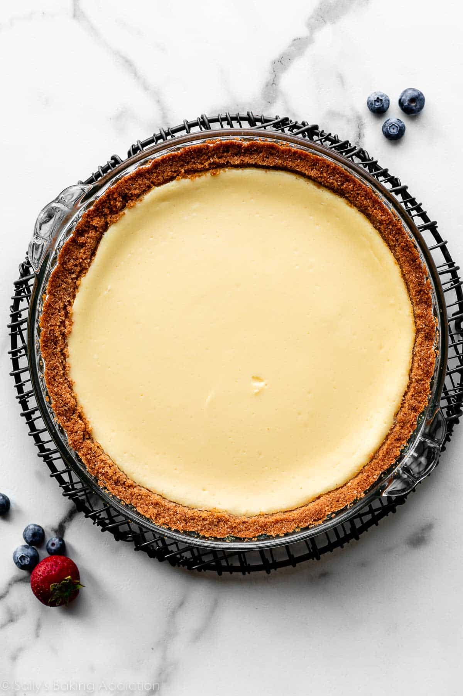
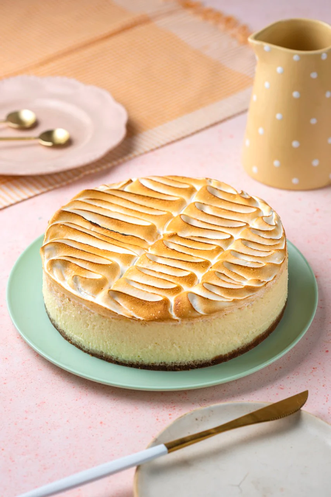
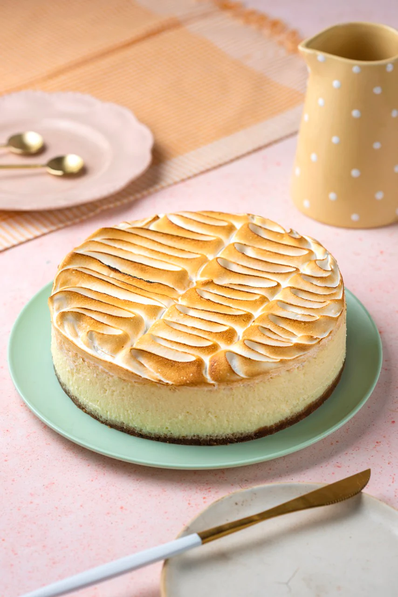

Classic Cheesecake Recipe:
Ingredients:
- 2 cups graham cracker crumbs
- 1/4 cup granulated sugar
- 1/2 cup unsalted butter, melted
- 4 (8-ounce) packages cream cheese, softened
- 1 1/4 cups granulated sugar
- 1 teaspoon vanilla extract
- 4 large eggs
- 2/3 cup sour cream
- 2/3 cup heavy cream
Instructions:
1. Preheat the Oven: Preheat your oven to 325°F (160°C). Grease a 9-inch springform pan and set aside.
2. Make the Crust: In a bowl, mix together graham cracker crumbs, sugar, and melted butter until well combined. Press the mixture evenly into the bottom of the prepared springform pan.

3. Prepare the Filling: In a large mixing bowl, beat the cream cheese until smooth. Add sugar and vanilla extract, and beat until creamy. Add eggs, one at a time, mixing well after each addition. Finally, mix in sour cream and heavy cream until smooth and creamy.
 4. Pour and Bake: Pour the cream cheese filling over the prepared crust. Smooth the top with a spatula. Bake in the preheated oven for about 55-60 minutes, or until the edges are set but the center still jiggles slightly.
5. Cool and Chill: Turn off the oven and leave the cheesecake inside with the door slightly ajar for about an hour. Then, remove it from the oven and let it cool completely at room temperature. Once cooled, refrigerate the cheesecake for at least 4 hours or overnight.

6. Serve and Enjoy: Remove the cheesecake from the springform pan and slice it into wedges. Serve chilled and enjoy!
Feel free to garnish your cheesecake with fresh berries, whipped cream, or a drizzle of chocolate sauce for added flavor and presentation.
4. Pour and Bake: Pour the cream cheese filling over the prepared crust. Smooth the top with a spatula. Bake in the preheated oven for about 55-60 minutes, or until the edges are set but the center still jiggles slightly.
5. Cool and Chill: Turn off the oven and leave the cheesecake inside with the door slightly ajar for about an hour. Then, remove it from the oven and let it cool completely at room temperature. Once cooled, refrigerate the cheesecake for at least 4 hours or overnight.

6. Serve and Enjoy: Remove the cheesecake from the springform pan and slice it into wedges. Serve chilled and enjoy!
Feel free to garnish your cheesecake with fresh berries, whipped cream, or a drizzle of chocolate sauce for added flavor and presentation.